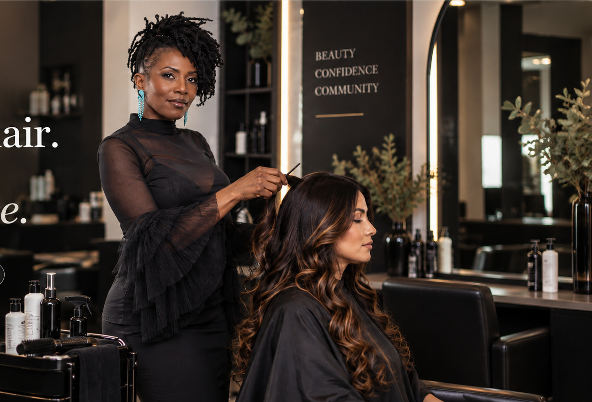

Texture & Curls
Personalized care for natural texture, curl definition and styles that respect how your hair actually lives.
Explore care →
Personalized care with Susan.
Healthy hair, thoughtful styling and one-on-one attention — without the complicated salon experience.
Personalized care for natural texture, curl definition and styles that respect how your hair actually lives.
Explore care →A thoughtful approach to strength, moisture, scalp care and routines designed around your individual goals.
View services →Polished looks for everyday confidence, special occasions and a finish that still feels like you.
See live availability →
Purity Haus is centered around Susan's belief that beauty is personal. The experience is calm, elevated and intentional — designed to help clients understand their hair, feel seen and leave with confidence.
One-on-one coaching with Susan for individuals and business owners who want clarity, accountability, confidence and a more intentional next chapter.
Explore CoachingSimple answers about booking, services, Susan and Purity of Hearts.
All salon appointments are booked through the Purity Haus Vagaro page, where you can view current services and live availability.
Susan is the founder and stylist behind Purity Haus. Her approach centers on personalized care, healthy hair and confidence.
Purity Haus focuses on texture and curl care, healthy hair and scalp support, cuts and finishing, color and consultation-led services. The live Vagaro menu is the source for current service names, prices and availability.
Yes. Purity of Hearts is Susan’s one-on-one coaching service for individuals and business owners seeking clarity, accountability and practical next steps.
Choose your service and live availability directly on Vagaro.